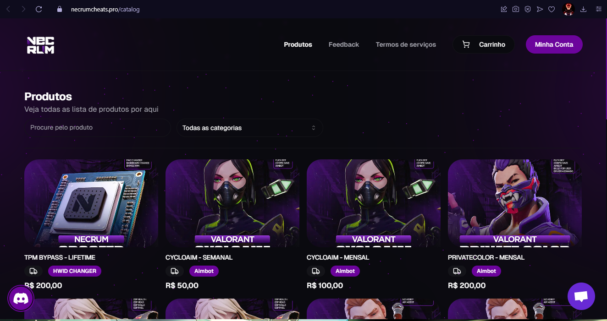
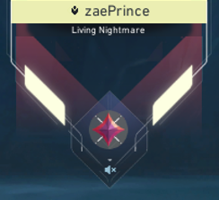
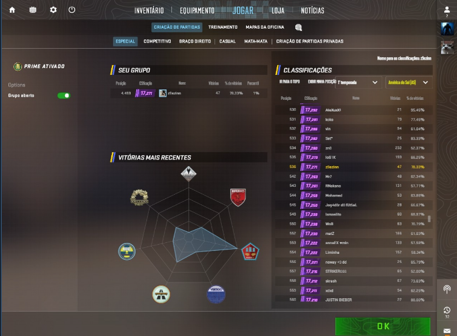

Bem-vindo ao meu portfólio!
Explore meus projetos, habilidades e informações de contato.
Meus Projetos


Upo contas em jogos como Valorant e CS2
Se você precisa de uma ajudinha para sair de seu rank pode contar cmg
Ver Detalhes
